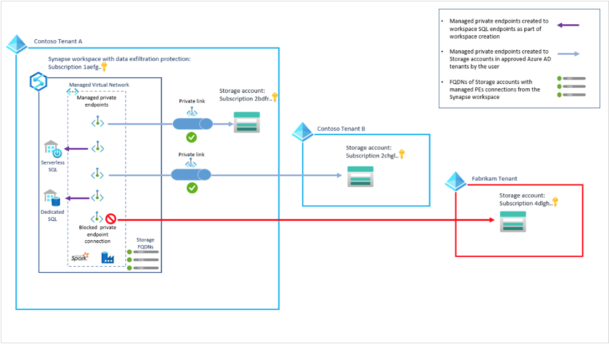

Dedicated SQL Pool Design Evaluation #
Overview #
The purpose of this evaluation is to validate the solution design’s dedicated SQL Pool components and to identify early on any design issues and, to validate the design meets common guidelines. By evaluating the design before solution development begins blockers and unexpected design changes will be avoided and protect the project’s timeline and budget.
Dedicated SQL pool refers to the enterprise relational data warehousing features that are available in Azure Synapse Analytics.
Synapse SQL leverages a scale out architecture to distribute computational processing of data across multiple nodes. Compute is separate from storage, which enables you to scale compute independently of the data in your system.

Review: Dedicated SQL pool architecture - Azure Synapse Analytics | Microsoft Docs
Assessment Analysis #
During your initial assessment you collected information about how your existing system was deployed and the details of structures that were implemented.
From the assessment review, you will be able to understand what the gaps are between what is implemented and what should be in place to get optimal performance. For example, the impact of having round robin table vs Hash distributed tables or the performance benefits of correctly using replicated tables.
Reviewing the Target Architecture #
For the successful deployment of a dedicated SQL Pool, it is important to have an architecture well aligned with the business requirements to make sure that the system responds to all your business needs.
There are several architectural suggestions for dedicated SQL Pools in the Microsoft documentation and if necessary you can review the Azure Data Architecture Guide - Azure Architecture Center | Microsoft Docs
Migration #
A migration project for synapse is very similar to any other Database migration. You will need to take in consideration that there might be differences between the original system and the Synapse.
Make sure that you have a clear migration path established for:
-
DDL/DML/Security objects/etc.
-
Data migration (export from source, transit to cloud)
-
Initial Data load to Synapse
-
Login/Users
-
Data Access control (for ex. Row-Level Security)
-
Time plan to execute.
You can also review the Azure Synapse Analytics: Migration guide - Azure Synapse Analytics | Microsoft Docs
Feature Gaps #
From the information gathered during your assessment and the solution design verify that any unsupported features from the existing environment that will be required in the solution have been identified and that a solution for supportability has been designed or that there is time built into the project plan to further identify these unsupported features and develop solutions and workarounds.
Some examples of unsupported features in dedicated SQL Pools are:
-
Identify unsupported data types (ex. Xml, arrays, spatial)
-
Identify unsupported features (ex: Cursors)
Dedicated SQL Pool Testing #
Just like any other project, your project should include the necessary set of tests to make sure that your dedicated SQL Pool responds as required to the needs of your business. It is critical to test at least for data quality, data integration, security, and performance.
Conclusion #
Taking the time to evaluate the design against the information gathered during the assessment and the capabilities of a dedicated SQL Pool will help assure that the best design for your solution will be implemented, and it will reduce the number of unexpected development or implementation issues that may be encountered during solution development.